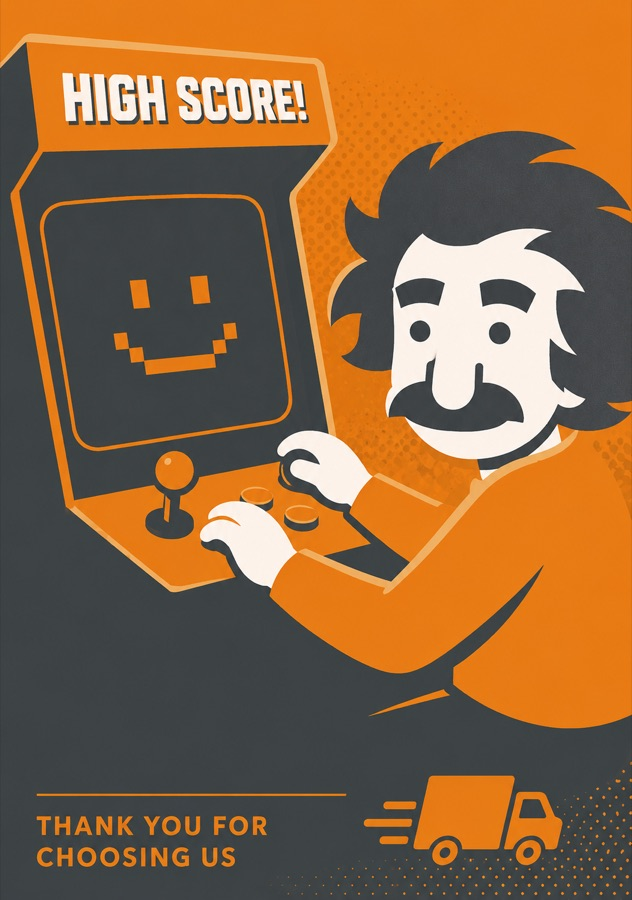
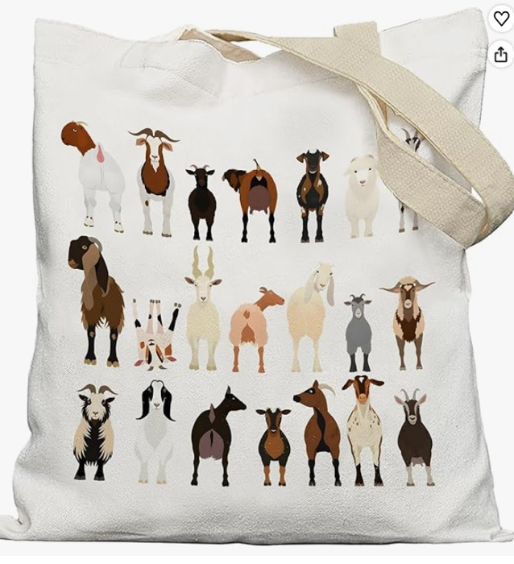
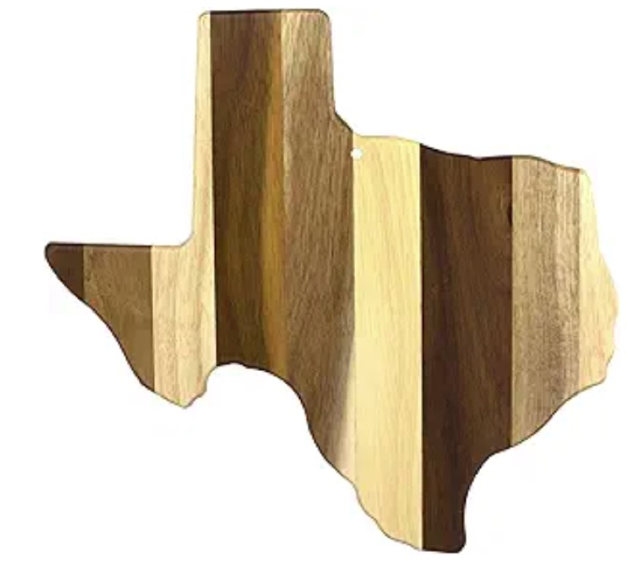
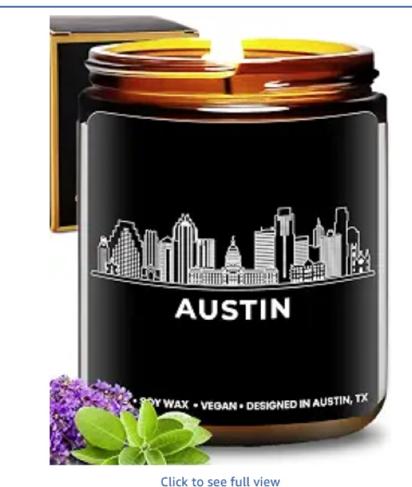
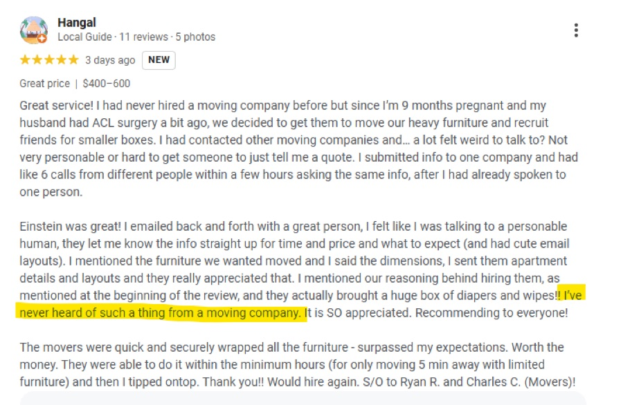

Einstein Moving Company · Q2 2026
What happened, what it means for you, and what we're doing about it. Five-minute read, straight talk.
July numbers are estimates until books close ~Aug 1.
DRAFT — internal only. Do not share: pending Cameron's final review + the QGR rulings (Q3 theme, survey treatment). Numbers re-sync to the final deck before send.
Chapter 1
Who we are, and how the quarter really went — record revenue, honest math on the misses.
Before the Numbers
Making moving easy and fun — because it usually sucks — by creating a customer service experience so remarkable it gets studied in college courses and analyzed in books.
The big goal: 300 trucks on the road by 2033.
How the Company Did
We did $8.4M in revenue — up almost 10% over last year, the biggest quarter in company history! And we didn't just ride a good market: the moving markets around us grew about 2–5% — we grew at roughly 3× the market's pace.
We hit ~95% of our revenue plan. Profit came in at about two-thirds of what we planned — record revenue did not mean record profit this quarter. (July numbers are estimates until books close ~Aug 1.)
Here's the thing we found when we dug in — the "miss" mostly wasn't a miss. We served more hours of moving than we had budgeted, which means most branches did MORE moves than we expected.
Full honesty: part of that "beat" is that the budget asked for too few hours in the first place — it counted trip-fee money in the price of an hour without counting the trip time, so the budget price was set too high and the budget hours too low.
The real gap: we didn't end up billing the budget price — mostly because a lot of Q2 work was booked back in the spring at its old quoted price, before our new pricing went live in May. That backlog effect faded to almost nothing by July. That's mostly a planning miss, and Paul and I own it.
The short version, lawn-mowing edition: we planned the summer with a broken measuring tape, a chunk of the summer's lawns were already promised at the old price, and we sent free helpers we never budgeted. The full story — the one worth two minutes — is right here:
You mow lawns. You charge $20 an hour.
The plan. "I want to make $800 this summer. At $20/hour, I need 40 hours." That's how the Q2 plan was built: hours × rate = revenue.
Mistake #1 — the broken ruler 📏 You also charge $5 "gas money" to bike to each lawn. You counted the $5 as money you made, but you didn't count the 15 minutes of biking as time you worked. So you figured "$25 for an hour's work!" — except it took an hour and fifteen. You really make $20. Two things break: you plan to work too few hours, and your scoreboard is bent on both ends.
Mistake #2 — you already shook on it 🤝 In May you raise to $25/hour. Smart. But back in March you promised twenty lawns at $20. Those neighbors keep the old price. The raise barely shows in May, half in June, and by July everyone's paying the new price.
Mistake #3 — you forgot to raise on some streets 🏘️ Oak Street never got raised. Rich Hill got charged more than planned. On average it's a wash — but nothing happens "on average." Two real things happened on two real streets, and only one is a problem.
Mistake #4 — the free helper 🧑🌾 Sometimes you bring a kid who's trying out for the job. With him helping, a lawn that should take 8 hours gets done in 5½. But he's free — it's his tryout — so you don't charge the neighbor for him. The bill comes in smaller than the number you quoted, and you never wrote that down when you planned your summer. May: $50. June: $26. July: $5. (Real: $49.5K / $25.9K / $4.8K.) And a chunk of the money you knocked off, you never wrote down a reason for at all.
What did NOT go wrong — the neighbors ✅ Nobody haggled you down. You never cut your posted price. You mowed more lawns than last year at higher prices and your schedule stayed full. One exception: on Tampa Street you bought four mowers and only found work for two. That's not a price problem — that's a too-many-mowers problem.
The whole story in four sentences: We built the plan with a measuring tape that was wrong, so we aimed at too few hours and too high a rate. We raised prices in the spring — but two million dollars of work was already promised at the old price, so the raise took two months to show up. We sent free helpers on jobs and never budgeted the discount. All of that faded to almost nothing by July; customers never pushed back on price. Where we're actually hurting is Tampa, and it's empty trucks, not cheap prices.
The profit gap: mostly us choosing to invest more money into the company than expected, plus more overtime than we budgeted and a few pop-up costs we didn't see coming (like a $30K plumbing repair at our North Dallas location).
The biggest choice was you: in mid-May we gave every mover a raise, about $1.85/hour on average. That wasn't budgeted in the quarter. We moved it up because it was the right call, not because the spreadsheet had room — and we'd make the same call again.
The rest of the gap was more bets on growth and some missed forecasting:
Meanwhile the company stayed strong where it counts: revenue covered our bills roughly 1.5 times over. Nobody should read this quarter as "the company is in trouble." It isn't.
We proved we can win demand — leads nearly doubled and we out-grew the market. Q3 points at two things: First, getting more crews on trucks: we finished the quarter with more work available than crews to run it (more on that two cards down). Second, turning leads into booked jobs faster — for CERs and sales, speed-to-lead is the play. For movers: keep availability up, keep NPS up, and send us people you'd want on your own crew. Your branch's specific picture is on your scorecard, linked at the bottom.
Chapter 2
Branch by branch: growth, trucks and crews, and a flood of new leads.
The Numbers
Company revenue grew +9.9% vs last year — 8 of 10 branches grew, Garland fastest at +38%.
Growth shown as a percent only — no dollar figures. Every Q2'26 branch reading carries the standard July-estimate caveat (final numbers land ~Aug 1).
Growth is why trucks keep getting added and promotion rungs keep opening — a growing branch is a branch with more lead-mover and driver slots.
We continue to hire up, improve forecasting/budgeting, and ensure we continue to outpace the residential market so that we continue to gobble up market share.
The Numbers
Count every truck on the lot and we ran ~76% utilization — that's the number we grade ourselves on, and against our 81% goal we got ~94% of the way there. A miss, and an honest one.
Count only the trucks we actually had crews for, and we ran ~84% — that's a reference number, not what we're graded on, but it tells you something important: the trucks that HAD crews stayed busy.
The difference between those two numbers is 861 truck-days — 861 separate days where a truck sat parked from open to close because there was no crew to run it. Real work left on the table.
This means the movers we did hire were utilized well and got the hours we intended — plus some, since we ran way more overtime than we budgeted this quarter. We just needed to hire even more crews to open up even more trucks.
We hired to ~101% of the staffing plan and it still wasn't enough — the plan was set below what summer demand actually needed, by roughly 40 movers company-wide. That's a target-setting miss on the planning side, not a hustle problem on yours.
Q3 staffing targets are re-set to real demand — which means the hours are there, and promotion slots open as crews grow. Two asks: keep your availability up, and if you know somebody who works the way you do, refer them.
The Numbers
The new quote form nearly doubled our leads (+97%) and the share of visitors starting a quote more than doubled (13% → 29%). Booyah.
We used to lose ~6 of 10 people who got an estimate — now we keep every one as a contactable lead. More leads = more booked jobs = more hours and bigger branches.
The honest flip side: this worked almost too well. The flood of new leads made it harder to get back to customers as fast as we expect. And a lot of these are "lower intent" leads — people who would have abandoned the cart before ever giving us their contact info on the old form. Those two things combined to lower our overall conversion rate.
Q3 is about two things with those leads: working them fast and working the right ones first (lead triage).
Honest answer on how 4,300+ leads went unworked: the old form only produced leads who asked to be contacted. The new one captures everyone — and nobody yet owned that new queue or had a speed target for it. Now we need to take control of that pipeline and juice it for all it's worth. We are on our way:
Marketing recap — the machine behind your leads
Ad spend per lead, branch by branch
| Branch | Ad spend | Leads | Spend per lead |
|---|---|---|---|
| Austin (North + South) | $29,086 | 5,628 | $5.17 |
| Houston | $20,075 | 2,789 | $7.20 |
| Dallas | $20,276 | 2,812 | $7.21 |
| McKinney | $15,489 | 1,775 | $8.73 |
| San Antonio | $20,119 | 2,089 | $9.63 |
| Leander | $14,279 | 1,138 | $12.55 |
| Fort Worth | $13,558 | 1,071 | $12.66 |
| Garland | $12,838 | 917 | $14.00 |
| Tampa | $13,028 | 627 | $20.78 |
| All branches | $158,748 | 18,846 | $8.42 |
Table covers the ~$159K of Google + Microsoft spend that can be tied to a branch; regional campaigns and Meta aren't branch-split (that's the gap to the ~$175K total). Same blended basis as above: spend ÷ all leads, including free organic/direct ones.
The number worth reading twice: $34.65 million
That's the total value of the jobs we quoted in Q2. Thirty-four and a half million dollars of people who came to us, told us about their move, and got a real price. We booked about $7.2M of it. Read that as the demand engine working: the customers are there, at real prices, in numbers we've never seen. The gap between quoted and booked isn't a demand problem — it's a follow-up opportunity, which brings us to the next item.
Q3's biggest low-hanging fruit — the EMMA Leads queue
Since the April 5 form launched, leads split into two lanes. Leads the form can't price automatically route to humans — and humans work them 99% of the time. Leads the form can price get an instant quote and land in the "EMMA Leads" queue — where 64.6% of the time, nobody ever follows up. No call, no text, no email.
That untouched pool is about 4,382 leads a quarter holding roughly $9.04M in quoted work we never touched again. Real people, real moves, real prices. They did everything right; we just never called.
Why this is the headline: most improvements cost something — more trucks, more hires, more spend. This one is already paid for. The leads exist, the quotes exist, and the fix is follow-up: speed-to-lead targets and clear ownership of that queue. When your branch's phones get busier in Q3, this is a big part of why.
Chapter 3
Games, safety, your voice, and the moments customers will never forget.
Recognition
Company scored 7.59 — Green (average of the 8 weekly averages). San Antonio won the bracket; Tampa posted the best overall score (10.05).
This is a pretty incredible result! This quarter is when we hired the most new movers, new managers, and new customer experience reps — which means we had the most new movers doing jobs estimated by the most new managers and CERs. That's a recipe for friction and ultimately lower scores. Even accounting for that, we were able to keep standards up across all five metrics — and that's incredible work.
Quick reminder: games are a coaching tool, directionally accurate by design — in-week estimates, not resolved actuals. Real coaching and accountability run off hard numbers and final data results; game scores are not a perfect match for quarterly bonus numbers.
The top 10% of Q2 mover scores among everyone who cleared the busy-season hours floor. Congrats to all 24 — spread across 7 branches (inclusive-tie rule: all movers tied at the cutline qualify). Tap a branch to see its Dream Team names.
Season 4 pauses official tracking next quarter while scoring gets automated — no live leaderboard, no bracket. The underlying metrics keep running and still feed bonuses.
Safety
Our fleet safety score climbed to 89, up from 80 last quarter, and the share of drivers flagged high-risk nearly halved. Following Distance events fell 54% — the quarter's biggest safety win.
And here's the number that hits the wallet: just 3 insurance claims in all of 2026 so far, roughly $15K out of pocket — versus 54 claims in all of 2025.
This is the fairest way to measure safe driving — events for every 10,000 miles driven, so a busier quarter can't hide anything. Measured on the same standards, we went from 28.5 in Q1 to 24.8 in Q2 — down 13%, while the fleet ran 23.5% MORE miles. (Count Q2 on the raw numbers and it reads 31.1 — but that's because mid-quarter we deliberately tightened two standards, Rolling Stop and Inattentive, to referee ourselves harder. That's stricter refereeing, not worse driving.)
Safety Events per 10,000 Miles, Branch by Branch
| Branch | Events | Miles driven | Events per 10K miles |
|---|---|---|---|
| Fort Worth | 24 | 18,030 | 13.3 |
| Tampa | 13 | 7,529 | 17.3 |
| Leander | 55 | 25,197 | 21.8 |
| Houston | 95 | 40,403 | 23.5 |
| South Austin | 94 | 37,927 | 24.8 |
| San Antonio | 102 | 37,309 | 27.3 |
| Garland | 55 | 15,852 | 34.7 |
| North Austin | 169 | 48,292 | 35.0 |
| Dallas | 286 | 66,277 | 43.2 |
| McKinney | 138 | 22,388 | 61.6 |
Raw Q2 numbers — every branch was refereed on the same standards all quarter, so branch-to-branch is a fair comparison. The company trend above adjusts Q2 back to Q1's standards, so these rows won't average to 24.8. Events are Samsara-flagged driving events, not accidents or claims.
Fewer real events = fewer claims = money that stays in the company and the bonus pool instead of going to the insurance company.
And this one's bigger than a bonus line: over the last couple of years our insurance rates rose so fast it was becoming one of the biggest existential threats to the business. At this point in time last year, we had about 27 claims. This year, we only have three! This kind of safe driving is one of the most direct ways a crew protects its own branch, and the whole company.
The packet review turned up one more honest read: the vast majority of our damages were us hitting things — not collisions with other cars. So the next step is aimed exactly there: improved driver training and recertifications built to avoid those types of accidents.
Customer Voice
Customer NPS came in at 88 vs our 90 bar (just under 92 in Q1).
NPS, Branch by Branch
| Branch | Q2 NPS | Q1 NPS | Surveys back | Response rate |
|---|---|---|---|---|
| Leander | 99.1 | 87.7 | 107 | 34.2% |
| Houston | 96.2 | 93.6 | 238 | 53.1% |
| Tampa | 93.8 | 100.0 | 32 | 20.5% |
| North Austin | 92.3 | 91.4 | 78 | 8.7% |
| Fort Worth | 88.2 | 96.2 | 68 | 29.8% |
| Garland | 86.4 | 100.0 | 44 | 21.4% |
| McKinney | 81.0 | 94.8 | 84 | 21.3% |
| South Austin | 80.8 | 89.6 | 104 | 14.5% |
| San Antonio | 79.8 | 85.2 | 114 | 22.4% |
| Dallas | 79.5 | 91.4 | 156 | 18.3% |
| Company | 88.0 | 91.9 | 1,025 | — |
Green = at or above the 90 bar. Response rate = surveys back ÷ completed moves (May + June, the full-month pair). Small survey counts at Tampa and Garland make their quarter-to-quarter swings noisier. July responses still coming in — final numbers land ~Aug 1.
Reviews and referrals are the cheapest jobs we ever book — every point of NPS is future work your branch doesn't have to buy.
Some honest context on the dip: like we mentioned above, this quarter we had more new movers, new managers, and new CX reps in the system at once than we've ever had. More new people means more chances for a rough edge — and it means the fix is reps and coaching, not panic.
And here's the proof customers still love the work: they posted 754 five-star reviews about your moves this quarter — up from 688 last quarter. Those reviews name names, and the most-named mover in the company was Luis Sanchez-Garcia with 29. When a customer takes five minutes after a long move day to write about you by name, that's the whole job done right.
5-Star Reviews, Branch by Branch
| Branch | 5-star reviews | Per 100 moves |
|---|---|---|
| Tampa | 95 | 48.5 |
| Houston | 114 | 21.4 |
| Fort Worth | 47 | 17.5 |
| South Austin | 151 | 17.2 |
| Leander | 59 | 15.1 |
| San Antonio | 74 | 13.9 |
| McKinney | 52 | 11.9 |
| Garland | 26 | 11.6 |
| Dallas | 81 | 8.1 |
| North Austin | 55 | 5.2 |
| Company | 754 | 13.7 |
Reviews logged through 7/21 — the quarter's last ~10 days aren't entered yet, so every branch's real number is a touch higher.
90 isn't a stretch goal for us — it's the floor. The goal is simple: get back above 90 now, and hold it the rest of the year. We know the playbook. Let's get it done!
Employee Voice
+81 is the salaried manager/CET survey (July cycle — the highest response count this survey has ever had, and near the all-time high of +84). The mover survey runs separately — the last mover read was Q1's +46, and the next mover survey runs this quarter. That's the fresh read.
The Q1 Scoreboard — You Talked. Here's What Happened.
After April's mover survey, leadership made six commitments in direct response to what movers asked for. Here's where each one stands, three months later:
Every item on that scoreboard started as a survey answer. This isn't a suggestion box that goes into a drawer — it's how the company decides where to put its money and its energy. Same deal this cycle.
The loudest theme in the July survey, by a wide margin: develop people faster. More structured training for managers, clearer career paths, clearer roles. That's exactly where the company is pointed:
And the survey itself is changing: this is the last cycle where participation is mandatory. From here, the plan is to collect this feedback more regularly — movers and managers alike — instead of one big survey every six months. Smaller asks, more often, so problems surface in weeks instead of quarters. When one lands, answer it: the scoreboard above is what your answers turn into.
Trend — two years at a high plateau
| Cycle | n | Avg | eNPS |
|---|---|---|---|
| July 2024 | 38 | 9.0 | +63 |
| January 2025 | 39 | 9.4 | +77 |
| July 2025 | 45 | 9.3 | +84 |
| January 2026 | 46 | 9.3 | +80 |
| July 2026 | 52 | 9.3 | +81 |
Distribution this cycle: 43 promoters · 8 passives · 1 detractor. The story is no longer the number — it's the themes.
By group
| Group | n | eNPS | Praised (14d) |
|---|---|---|---|
| G&A | 4 | +100 | 100% |
| CET (Sales + Claims) | 21 | +90 | 90% |
| CTXH | 15 | +73 | 87% |
| DFWT | 10 | +60 | 70% |
Recognition is the closest lever in this table — it's free, it's fast, and the praised-recently rate tracks the score.
Start / Stop / Keep — top themes from 52 responses
Start
Stop
Keep
Straight talk on the Stop column: pace of change is a fair hit — this company ships a lot, and mid-quarter rule changes landed on you more than once last quarter. Leadership heard it. And the Start column is exactly what this quarter's theme is built to answer: the survey asked for faster manager development before leadership ever put it on a whiteboard.
Claims & Magic Moments
The claims team closed the average claim in under a week and ran 99–100% claims accuracy against a 95 bar — Super Green. And we delivered 36 Magic Moments against a goal of 35.
Here's what makes that impressive: it was the busiest quarter in company history, the team ran the entire quarter short one of its leaders, and a brand-new claims rep was ramping — and they held both claims metrics Green the whole way. A claim handled fast and fairly is how a bad move day still ends in a 5-star review.
A few Magic Moments from the quarter: a self-care box for a single mother of two facing a biopsy · support for a customer moving home to care for his mother after a broken tibia · a housewarming for a family who lost both parents within three months · diapers on move day for a family with a newborn. That's the job behind the job.
A Few of Them, In Pictures





A Q2 First: Movers Submitted Magic Moments
Until this quarter, every Magic Moment came from the office. Q2 changed that — the first mover-submitted Magic Moments in company history:
Why this matters: you're in the living room — we're not. Nobody spots these moments before the crew does. See one, submit it, and the claims team handles everything from there. Let's make mover-submitted the biggest category in Q3.
Carly's back as of late July (she leads the Claims Team) and we plan on continuing to expand our Magic Moments program to deliver more magic moments across all cycles of the moving experience (not just post-move). Keep the Magic Moment nominations coming!
The CET
Nine weeks, three teams, and all 14 teammates participated every single week. First Class (team winners): Jules Nicolas (Sales) · Nessa Besas (Remote Operations) · Jaci Basco & Stephanie Robledo (Claims).
Business Class: Maria Yangson, Amy Arbasa, Zhang Pammit, Nicole Tolete, Arden Asilo, June Pardines, Donna Carrillo. Same idea as the Einstein Games on the branch side — a game that makes the standard visible and celebrates the people who set it.
The CET (sales, remote operations, and claims) had booked 88% of the quarter's sales plan at day 83 of 92 — the final number lands when the quarter closes. And 82% of moves came in at or under the estimate the customer was given, above our 80 bar.
Every booked move is your crew's next day of work — the sales team fills the trucks you run. And when the final bill lands at or under the quote, the customer trusts the price, tips better, and reviews better. That trust is built on both ends: their quote and your crew's execution.
The sharpening focus next quarter is estimate precision — getting more quotes to land close to actual, not just under. Your walkthroughs and job notes are half of that equation: the better the information going in, the better the quote coming out.
Chapter 4
Q3, your questions answered, and your branch's own page.
Coming Next Quarter
That was the company story — your branch's own quarter (NPS, safety, availability, recognition) lives on your scorecard. In the huddle this is the handoff: company page first, then your branch's page.
CTXH
North Austin
Open →CTXH
South Austin
Open →CTXH
Leander
Open →CTXH
San Antonio
Open →CTXH
Houston
Open →DFWT
Dallas
Open →DFWT
Fort Worth
Open →DFWT
Garland
Open →DFWT
McKinney
Open →Tampa
Tampa
Open →